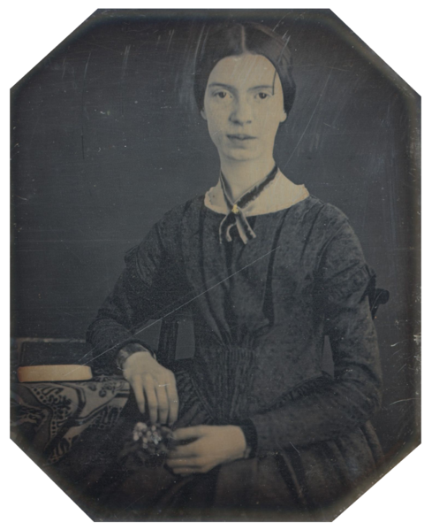

Emily Dickinson was an American poet, born December 10, 1830 and died May 15, 1886. Although she wrote nearly 1800 poems during her lifetime, only ten and one letter were published when she was alive. Her writing was unique for the time, with short lines, slant rhyme, and unordinary punctuation and capitalization. Her poems primarily focused on death and immortality, but also included subjects such as society, nature, and spirituality.
